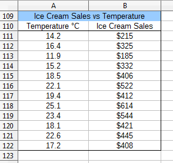
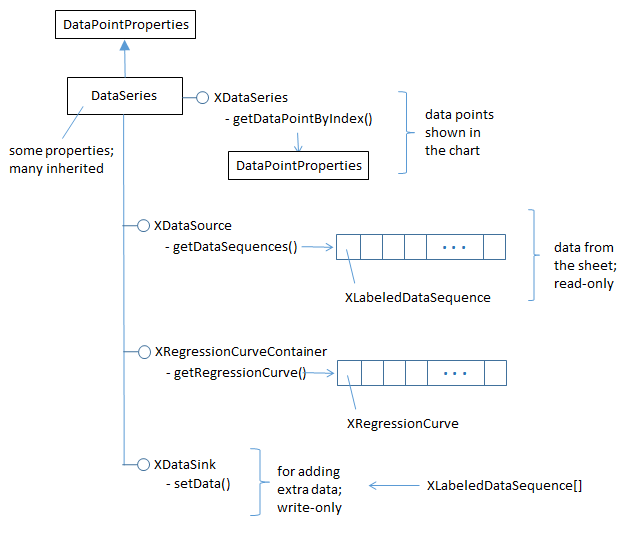
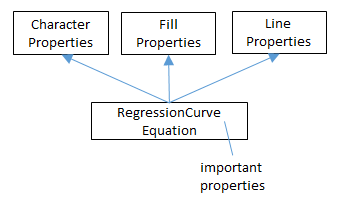
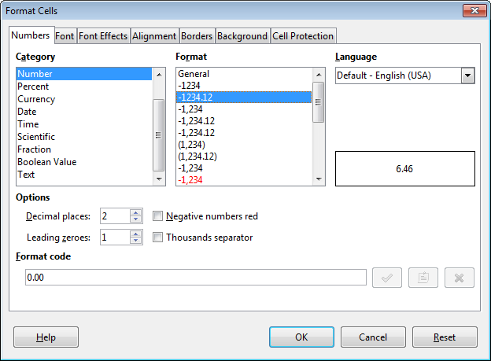
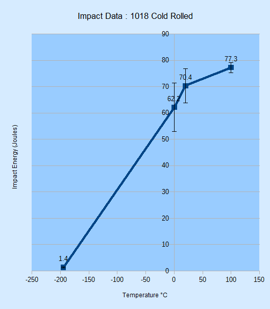
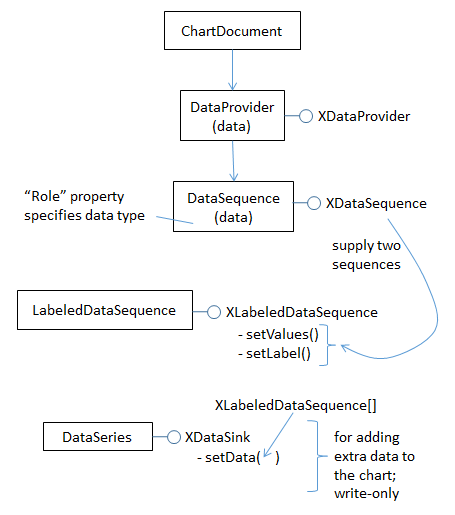

Chapter 31. XY (Scatter) Charts¶
Topics
A Scatter Chart (with Regressions); Calculating Regressions; Drawing a Regression Curve; Changing Axis Scales; Adding Error Bars
Example folders: "Chart2 Tests" and "Utils"
This chapter continues using the Chart2Views.java example from previous chapters, but looks at how various kinds of scatter charts can be generated from spreadsheet data.
A scatter chart is a good way to display (x, y) coordinate data since the x-axis values are treated as numbers not categories. In addition, regression functions can be calculated and displayed, the axis scales can be changed, and error bars added.
The relevant lines of Chart2Views.java are:
// part of Chart2Views.java
public static void main(String args[])
{
XComponentLoader loader = Lo.loadOffice();
XSpreadsheetDocument doc = Calc.openDoc(CHARTS_DATA, loader);
GUI.setVisible(doc, true);
XSpreadsheet sheet = Calc.getSheet(doc, 0);
// ---- use different chart templates ----
scatterChart(doc, sheet); // see sections 1-3
// scatterLineLogChart(doc, sheet); // section 4
// scatterLineErrorChart(doc, sheet); // section 5
: // more chart examples
Lo.waitEnter();
Lo.closeDoc(doc);
Lo.closeOffice();
} // end of main()
1. A Scatter Chart (with Regressions)¶
scatterChart() in Chart2Views.java utilizes the "Ice Cream Sales vs. Temperature" table in "chartsData.ods" (see Figure 1) to generate the scatter chart in Figure 2.

Figure 1. The "Ice Cream Sales vs. Temperature" Table.

Figure 2. Scatter Chart for the Table in Figure 1.
Note that the x-axis in Figure 1 is numerical, showing values ranging between 10.0 and 26.0. This range is calculated automatically by the template.
scatterChart() is:
// in Chart2Views.java
private static void scatterChart(XSpreadsheetDocument doc,
XSpreadsheet sheet)
{
CellRangeAddress rangeAddr = Calc.getAddress(sheet, "A110:B122");
XChartDocument chartDoc = Chart2.insertChart(sheet,
rangeAddr, "C109", 16, 11, "ScatterSymbol");
// ScatterSymbol, ScatterLine, ScatterLineSymbol
Calc.gotoCell(doc, "A104");
Chart2.setTitle(chartDoc, Calc.getString(sheet, "A109"));
Chart2.setXAxisTitle(chartDoc, Calc.getString(sheet, "A110"));
Chart2.setYAxisTitle(chartDoc, Calc.getString(sheet, "B110"));
Chart2.rotateYAxisTitle(chartDoc, 90);
Chart2.setDataPointLabels(chartDoc, Chart2.DP_NONE);
// reduce clutter
// Chart2.calcRegressions(chartDoc);
// Chart2.drawRegressionCurve(chartDoc, Chart2.LINEAR);
} // end of scatterChart()
If the Chart2.calcRegressions() line is uncommented then several different regression functions are calculated using the chart's data. Their equations and R2 values are printed as shown below:
Linear regression curve:
Curve equation: f(x) = 30.09x - 159.5
R^2 value: 0.917
Logarithmic regression curve:
Curve equation: f(x) = 544.1 ln(x) - 1178
R^2 value: 0.921
Exponential regression curve:
Curve equation: f(x) = 81.62 exp( 0.0826 x )
R^2 value: 0.865
Power regression curve:
Curve equation: f(x) = 4.545 x^1.525
R^2 value: 0.906
Polynomial regression curve:
Curve equation: f(x) = - 0.5384x^2 + 50.24x - 340.1
R^2 value: 0.921
Moving average regression curve:
Curve equation: Moving average trend line with period = %PERIOD
R^2 value: NaN
A logarithmic or quadratic polynomial are the best matches, but linear is a close third. The "moving average" R2 result is NaN (Not-a-Number) since no average of period 2 matches the data.
If the Chart2.drawRegressionCurve() call is uncommented, the chart drawing will include a linear regression line and its equation and R2 value (see Figure 3).

Figure 3. Scatter Chart with Linear Regression Line for the Table in Figure 1.
The regression function is f(x) = 30.09x - 159.47, and the C value is 0.92 (to 2 dp). If the constant is changed to Chart2.LOGARITHMIC in the call to Chart2.drawRegressionCurve() then the generated function is f(x) = 544.1 ln(x) – 1178 with an R2 value of 0.92. Other regression curves are represented by the Chart2 constants EXPONENTIAL, POWER, POLYNOMIAL, and MOVING_AVERAGE.
2. Calculating Regressions¶
Chart2.calcRegressions() is:
// in the Chart2 class
// globals
private static final int[] CURVE_KINDS =
{ LINEAR, LOGARITHMIC, EXPONENTIAL, POWER,
POLYNOMIAL, MOVING_AVERAGE };
private static final String[] CURVE_NAMES =
{ "Linear", "Logarithmic", "Exponential", "Power",
"Polynomial", "Moving average" };
public static void calcRegressions(XChartDocument chartDoc)
{
for(int i=0; i < CURVE_KINDS.length; i++) {
XRegressionCurve curve = createCurve(CURVE_KINDS[i]);
System.out.println(CURVE_NAMES[i] + " regression curve:");
evalCurve(chartDoc, curve);
System.out.println();
}
} // end of calcRegressions()
createCurve() matches the regression constants defined in CURVE_KINDS[] to regression services offered by the API:
// in the Chart2 class
public static XRegressionCurve createCurve(int curveKind)
{
if (curveKind == LINEAR)
return Lo.createInstanceMCF(XRegressionCurve.class,
"com.sun.star.chart2.LinearRegressionCurve");
else if (curveKind == LOGARITHMIC)
return Lo.createInstanceMCF(XRegressionCurve.class,
"com.sun.star.chart2.LogarithmicRegressionCurve");
else if (curveKind == EXPONENTIAL)
return Lo.createInstanceMCF(XRegressionCurve.class,
"com.sun.star.chart2.ExponentialRegressionCurve");
else if (curveKind == POWER)
return Lo.createInstanceMCF(XRegressionCurve.class,
"com.sun.star.chart2.PotentialRegressionCurve");
else if (curveKind == POLYNOMIAL) // assume degree == 2
return Lo.createInstanceMCF(XRegressionCurve.class,
"com.sun.star.chart2.PolynomialRegressionCurve");
else if (curveKind == MOVING_AVERAGE) // assume period == 2
return Lo.createInstanceMCF(XRegressionCurve.class,
"com.sun.star.chart2.MovingAverageRegressionCurve");
else {
System.out.println("Did not recognize regression line kind: " +
curveKind + "; using linear");
return Lo.createInstanceMCF(XRegressionCurve.class,
"com.sun.star.chart2.LinearRegressionCurve");
}
} // end of createCurve()
There are seven regression curve services in the chart2 module, all of which support the XRegressionCurve interface, as shown in Figure 4.

Figure 4. The Regression Curve Services
The RegressionCurve service shown in Figure 4 is not a superclass for the other services. Also note that the regression curve service for power functions is called "PotentialRegressionCurve".
Chart2.evalCurve() uses XRegressionCurve.getCalculator() to access the XRegressionCurveCalculator interface. It sets up the data and parameters for a particular curve, and prints the results of curve fitting:
// in the Chart2 class
public static void evalCurve(XChartDocument chartDoc,
XRegressionCurve curve)
{
XRegressionCurveCalculator curveCalc = curve.getCalculator();
int degree = 1;
if (getCurveType(curve) != LINEAR)
degree = 2; // assumes POLYNOMIAL curve has degree == 2
curveCalc.setRegressionProperties(degree, false, 0, 2);
// args: degree, forceIntercept, interceptValue, period
XDataSource dataSource = getDataSource(chartDoc);
// printLabeledSeqs(dataSource);
double[] xVals = getChartData(dataSource, 0);
double[] yVals = getChartData(dataSource, 1);
curveCalc.recalculateRegression(xVals, yVals);
System.out.println(" Curve equation: " +
curveCalc.getRepresentation());
double cc = curveCalc.getCorrelationCoefficient();
System.out.printf(" R^2 value: %.3f\n", (cc*cc)); // 3 dp
} // end of evalCurve()
The calculation is configured by calling XRegressionCurveCalculator.setRegressionProperties(), and carried out by XRegressionCurveCalculator.recalculateRegression().
The degree argument of setRegressionProperties() specifies the polynomial curve's degree, which I've hardwired to be quadratic (i.e. a degree of 2). The period argument is used when a moving average curve is being fitted.
recalculateRegression() requires two arrays of x- and y- axis values for the scatter points. These are obtained from the chart's data source by calling Chart2.getDataSource() which returns the XDataSource interface for the DataSeries service.
Figure 5 shows the XDataSource, XRegressionCurveContainer, and XDataSink interfaces of the DataSeries service.

Figure 5. More Detailed DataSeries Service.
In previous chapters, I've only used the XDataSeries interface, which offers access to the data points in the chart. The XDataSource interface, which is read-only, gives access to the underlying data that was used to create the points. The data is stored as an array of XLabeledDataSequence objects; each object contains a label and a sequence of data.
Chart2.getDataSource() is defined as:
// in the Chart2 class
public static XDataSource getDataSource(XChartDocument chartDoc)
{
XDataSeries[] dataSeriesArr = getDataSeries(chartDoc);
return Lo.qi(XDataSource.class, dataSeriesArr[0]); // get first
}
This method assumes that the programmer wants the first data source in the data series. This is adequate for most charts which only use one data source.
Chart2.printLabeledSeqs() is a diagnostic function for printing all the labeled data sequences stored in an XDataSource:
// in the Chart2 class
public static void printLabeledSeqs(XDataSource dataSource)
{
XLabeledDataSequence[] dataSeqs = dataSource.getDataSequences();
System.out.println("No. of sequences in data source: " +
dataSeqs.length);
for (int i=0; i < dataSeqs.length; i++) {
Object[] labelSeq = dataSeqs[i].getLabel().getData();
System.out.print(labelSeq[0] + " :");
Object[] valsSeq = dataSeqs[i].getValues().getData();
for (Object val : valsSeq)
System.out.print(" " + val);
System.out.println();
String srRep = dataSeqs[i].getValues().
getSourceRangeRepresentation();
System.out.println(" Source range: " + srRep);
}
} // end of printLabeledSeqs()
When these function is applied to the data source for the scatter chart, the following is printed:
No. of sequences in data source: 2
Temperature °C : 14.2 16.4 11.9 15.2 18.5 22.1 19.4
25.1 23.4 18.1 22.6 17.2
Source range: $examples.$A$111:$A$122
Ice Cream Sales : 215.0 325.0 185.0 332.0 406.0 522.0
412.0 614.0 544.0 421.0 445.0 408.0
Source range: $examples.$B$111:$B$122
This output shows that the data source consists of two XLabeledDataSequence objects, representing the x- and y- values in the data source (see Figure 1). These objects' data are extracted as arrays by calls to Chart2.getChartData():
// in the Chart2 class
// part of evalCurve()
:
XDataSource dataSource = getDataSource(chartDoc);
printLabeledSeqs(dataSource);
double[] xVals = getChartData(dataSource, 0);
double[] yVals = getChartData(dataSource, 1);
curveCalc.recalculateRegression(xVals, yVals);
When recalculateRegression() has finished, various results about the fitted curve can be extracted from the XRegressionCurveCalculator variable, curveCalc. evalCurve() prints the function string (using getRepresentation()) and the R 2 value (using getCorrelationCoefficient()).
3. Drawing a Regression Curve¶
One of the surprising things about drawing a regression curve is that there's no need to explicitly calculate the curve's function with XRegressionCurveCalculator. Instead Chart2.drawRegressionCurve() only has to initialize the curve via the data series' XRegressionCurveContainer interface (see Figure 5). drawRegressionCurve() is:
// in the Chart2 class
public static void drawRegressionCurve(XChartDocument chartDoc,
int curveKind)
{
XDataSeries[] dataSeriesArr = getDataSeries(chartDoc);
XRegressionCurveContainer rcCon = Lo.qi(
XRegressionCurveContainer.class, dataSeriesArr[0]);
XRegressionCurve curve = createCurve(curveKind);
rcCon.addRegressionCurve(curve); // calculates the curve
// show equation and R^2 value
XPropertySet props = curve.getEquationProperties();
Props.setProperty(props, "ShowCorrelationCoefficient", true);
Props.setProperty(props, "ShowEquation", true);
int key = getNumberFormatKey(chartDoc, "0.00"); // 2 dp
if (key != -1)
Props.setProperty(props, "NumberFormat", key);
} // end of drawRegressionCurve()
The XDataSeries interface for the first data series in the chart is converted to XRegressionCurveContainer, and an XRegressionCurve instance added to it. This triggers the calculation of the curve's function. The rest of drawRegressionCurve() deals with how the function information is displayed on the chart.
XRegressionCurve.getEquationProperties() returns a property set which is an instance of the RegressionCurveEquation class, shown in Figure 6.

Figure 6. The RegressionCurveEquation Property Class.
RegressionCurveEquation inherits properties related to character, fill, and line, since
it controls how the curve, function string, and R2 value are drawn on the chart. These
last two are made visible by setting the "ShowEquation" and
"ShowCorrelationCoefficient" properties to true, which are defined in
RegressionCurveEquation. Online documentation on this class can be accessed using
lodoc RegressionCurveEquation.
Another useful property is "NumberFormat" which can be used to reduce the number of decimal places used when printing the function and R2 value.
Chart2.getNumberFormatKey() converts a number format string into a number format key, which is assigned to the "NumberFormat" property:
// in the Chart2 class
public static int getNumberFormatKey(XChartDocument chartDoc,
String nfStr)
{
XNumberFormatsSupplier xfs =
Lo.qi(XNumberFormatsSupplier.class, chartDoc);
XNumberFormats nFormats = xfs.getNumberFormats();
int key = (int) nFormats.queryKey(nfStr,
new com.sun.star.lang.Locale("en", "us", ""), false);
if (key == -1)
System.out.println("Could not access key for format: \"" +
nfStr + "\"");
return key;
} // end of getNumberFormatKey()
The string-to-key conversion is straight forward if you know what number format string to use, but there's little documentation on them. Probably the best approach is to use the Format Cells menu item in a spreadsheet document, and examine the dialog in Figure 7.

Figure 7. The Format Cells Dialog.
When you select a given category and format, the number format string is shown in the "Format Code" field at the bottom of the dialog. Figure 7 shows that the format string for two decimal place numbers is "0.00". This string should be passed to getNumberFormatKey() in drawRegressionCurve():
int key = getNumberFormatKey(chartDoc, "0.00");
4. Changing Axis Scales¶
Another way to understand scatter data is by changing the chart's axis scaling. Alternatives to linear are logarithmic, exponential, or power, although I've found that the latter two cause the chart to be drawn incorrectly.
scatterLineLogChart() in Chart2Views.java utilizes the "Power Function Test" table in "chartsData.ods" (see Figure 8).

Figure 8. The "Power Function Test" Table.
I used the formula "=4.1*POWER(E<number>, 3.2)" (i.e. [*** Not rendered ***] ) to generate the
"Actual" column from the "Input" column's cells. Then I manually rounded the results
and copied them into the "Output" column.
The data range passed to the Chart.insertChart() uses the "Input" and "Output" columns of the table in Figure 8. The generated scatter chart in Figure 9 uses log scaling for the axes, and fits a power function to the data points.

Figure 9. Scatter Chart for the Table in Figure 8.
The power function fits the data so well that the black regression line lies over the blue data curve. The regression function is f(x) = 3.89 x^2.32 (i.e. ) with R2 = 1.00, which is close to the power formula I used to generate the "Actual" column data.
scatterLineLogChart() is:
// in Chart2Views.java
private static void scatterLineLogChart(XSpreadsheetDocument doc,
XSpreadsheet sheet)
{
CellRangeAddress rangeAddr = Calc.getAddress(sheet, "E110:F120");
XChartDocument chartDoc =
Chart2.insertChart(sheet, rangeAddr,
"A121", 20, 11, "ScatterLineSymbol");
Calc.gotoCell(doc, "A121");
Chart2.setTitle(chartDoc, Calc.getString(sheet, "E109"));
Chart2.setXAxisTitle(chartDoc, Calc.getString(sheet, "E110"));
Chart2.setYAxisTitle(chartDoc, Calc.getString(sheet, "F110"));
Chart2.rotateYAxisTitle(chartDoc, 90);
// change x- and y- axes to log scaling
Chart2.scaleXAxis(chartDoc, Chart2.LOGARITHMIC);
Chart2.scaleYAxis(chartDoc, Chart2.LOGARITHMIC);
// LINEAR, LOGARITHMIC, (EXPONENTIAL, POWER)
Chart2.drawRegressionCurve(chartDoc, Chart2.POWER);
} // end of scatterLineLogChart()
Chart2.scaleXAxis() and Chart2.scaleYAxis() call the more general Chart2.scaleAxis() function:
// in the Chart2 class
public static XAxis scaleXAxis(XChartDocument chartDoc,
int scaleType)
{ return scaleAxis(chartDoc, Chart2.X_AXIS, 0, scaleType); }
public static XAxis scaleYAxis(XChartDocument chartDoc,
int scaleType)
{ return scaleAxis(chartDoc, Chart2.Y_AXIS, 0, scaleType); }
Chart2.scaleAxis() utilizes XAxis.getScaleData() and XAxis.setScaleData() to access and modify the axis scales:
// in the Chart2 class
public static XAxis scaleAxis(XChartDocument chartDoc, int axisVal,
int idx, int scaleType)
/* scaleTypes: LINEAR, LOGARITHMIC, EXPONENTIAL, POWER, but
latter two seem unstable */
{
XAxis axis = getAxis(chartDoc, axisVal, idx);
if (axis == null)
return null;
ScaleData sd = axis.getScaleData();
if (scaleType == LINEAR)
sd.Scaling = Lo.createInstanceMCF(XScaling.class,
"com.sun.star.chart2.LinearScaling");
else if (scaleType == LOGARITHMIC)
sd.Scaling = Lo.createInstanceMCF(XScaling.class,
"com.sun.star.chart2.LogarithmicScaling");
else if (scaleType == EXPONENTIAL)
sd.Scaling = Lo.createInstanceMCF(XScaling.class,
"com.sun.star.chart2.ExponentialScaling");
else if (scaleType == POWER)
sd.Scaling = Lo.createInstanceMCF(XScaling.class,
"com.sun.star.chart2.PowerScaling");
else
System.out.println("Did not recognize scaling: " + scaleType);
axis.setScaleData(sd);
return axis;
} // end of scaleAxis()
The different scaling services all support the XScaling interface, as illustrated by Figure 10.

Figure 10. The Scaling Services.
5. Adding Error Bars¶
scatterLineErrorChart() in Chart2Views.java employs the "Impact Data : 1018 Cold Rolled" table in "chartsData.ods" (see Figure 11).

Figure 11. The "Impact Data : 1018 Cold Rolled" Table.
The data range passed to the Chart.insertChart() uses the "Temperature" and "Mean" columns of the table; the "Stderr" column is added separately to generate error bars along the y-axis. The resulting scatter chart is shown in Figure 12.

Figure 12. Scatter Chart with Error Bars for the Table in Figure 11.
scatterLineLogChart() is:
// in Chart2Views.java
private static void scatterLineErrorChart(XSpreadsheetDocument doc,
XSpreadsheet sheet)
{
CellRangeAddress rangeAddr = Calc.getAddress(sheet, "A142:B146");
XChartDocument chartDoc = Chart2.insertChart(sheet,
rangeAddr, "F115", 14, 16, "ScatterLineSymbol");
Calc.gotoCell(doc, "A123");
Chart2.setTitle(chartDoc, Calc.getString(sheet, "A141"));
Chart2.setXAxisTitle(chartDoc, Calc.getString(sheet, "A142"));
Chart2.setYAxisTitle(chartDoc, "Impact Energy (Joules)");
Chart2.rotateYAxisTitle(chartDoc, 90);
// y-axis error bars
String sheetName = Calc.getSheetName(sheet);
String errorLabel = sheetName + "." + "C142";
String errorRange = sheetName + "." + "C143:C146";
Chart2.setYErrorBars(chartDoc, errorLabel, errorRange);
} // end of scatterLineErrorChart()
The new feature in scatterLineErrorChart() is the call to Chart2.setYErrorBars(), which I'll explain over the next four subsections.
5.1. Creating New Chart Data¶
The secret to adding extra data to a chart is XDataSink.setData(). XDataSink is yet another interface for the DataSeries service (see Figure 5).
There are several stages required, which are depicted in Figure 13.

Figure 13. Using XDataSink to Add Data to a Chart.
The DataProvider service produces two XDataSequence objects which are combined to become a XLabeledDataSequence object. An array of these objects is passed to XDataSink.setData().
The DataProvider service is accessed with one line of code:
XDataProvider dp = chartDoc.getDataProvider();
Chart2.createLDSeq() creates a XLabeledDataSequence instance from two XDataSequence objects, one acting as a label the other as data. The XDataSequence object representing the data must have its "Role" property set to indicate the type of the data.
// in the Chart2 class
public static XLabeledDataSequence createLDSeq(XDataProvider dp,
String role, String dataLabel, String dataRange)
// create labeled data sequence using label and data;
// the data has the specified role
{
// create data sequence for the label
XDataSequence labelSeq =
dp.createDataSequenceByRangeRepresentation(dataLabel);
// create data sequence for the data
XDataSequence dataSeq =
dp.createDataSequenceByRangeRepresentation(dataRange);
XPropertySet dsProps = Lo.qi(XPropertySet.class, dataSeq);
Props.setProperty(dsProps, "Role", role);
//specify data role (type)
// create labeled data sequence using label and data seqs
XLabeledDataSequence ldSeq =
Lo.createInstanceMCF(XLabeledDataSequence.class,
"com.sun.star.chart2.data.LabeledDataSequence");
ldSeq.setLabel(labelSeq); // add label
ldSeq.setValues(dataSeq); // add data
return ldSeq;
} // end of createLDSeq()
Four arguments are passed to createLDSeq(): a reference to the XDataProvider interface, a role string, a label, and a data range. For example:
// part of Chart2.setYErrorBars(); see section 5.4 below
:
String label = sheetName + "." + "C142";
String dataRange = sheetName + "." + "C143:C146";
XLabeledDataSequence lds =
Chart2.createLDSeq(dp, "error-bars-y-positive", label, dataRange);
Role strings are defined in DataSequenceRole, which is documented on the page that
describes chart2's data submodule (call lodoc chart2 data module, and scroll to
the bottom).
XDataSink.setData() can accept multiple XLabeledDataSequence objects in an array, making it possible to add several kinds of data to the chart at once. This is just as well since I need to add two XLabeledDataSequence objects, one for the error bars above the data points (i.e. up the y-axis), and another for the error bars below the points (i.e.
down the y-axis). The code for doing this:
// part of Chart2.setYErrorBars(); see section 5.4 below
:
XDataSink dataSink = ... // create the data sink
XDataProvider dp = chartDoc.getDataProvider();
XLabeledDataSequence posErrSeq = // bars above data points
createLDSeq(dp, "error-bars-y-positive", dataLabel, dataRange);
XLabeledDataSequence negErrSeq = // bars below the data points
createLDSeq(dp, "error-bars-y-negative", dataLabel, dataRange);
XLabeledDataSequence[] ldSeqArr = { posErrSeq, negErrSeq };
// build array
// add the two error bars to the data sink
dataSink.setData(ldSeqArr);
// add the data sink to the chart ...
This code fragment leaves two topics unexplained: how the data sink is initially created, and how the data sink is linked to the chart.
5.2. Creating the Data Sink¶
The data sink for error bars relies on the ErrorBar service, which is shown in Figure 14.

Figure 14. The ErrorBar Service
The ErrorBar service stores error bar properties and implements the XDataSink interface. The following code fragment creates an instance of the ErrorBar service, sets some of its properties, and converts it to an XDataSink:
// part of Chart2.setYErrorBars(); see section 5.4 below
:
XPropertySet props = Lo.createInstanceMCF(XPropertySet.class,
"com.sun.star.chart2.ErrorBar");
Props.setProperty(props, "ShowPositiveError", true);
Props.setProperty(props, "ShowNegativeError", true);
Props.setProperty(props, "ErrorBarStyle", ErrorBarStyle.FROM_DATA);
XDataSink dataSink = Lo.qi(XDataSink.class, props);
For details on the ErrorBar service, execute lodoc chart2 ErrorBar.
5.3. Linking the Data Sink to the Chart¶
Once the data sink has been filled with XLabeledDataSequence objects, it can be linked to the data series in the chart. For error bars this is done via the properties "ErrorBarX" and "ErrorBarY". For example, the following code assigns a data sink to the data series' "ErrorBarY" property:
// part of Chart2.setYErrorBars(); see section 5.4 below
:
XDataSeries[] dsa = getDataSeries(chartDoc);
XDataSeries ds = dsa[0];
Props.setProperty(ds, "ErrorBarY", props);
Note that the value assigned to "ErrorBarY" is not an XDataSink interface (e.g. not dataSink from the earlier code fragment) but its property set (i.e. props).
5.4. Bringing it All Together¶
Chart2.setYErrorBars() combines the previous code fragments into a single method: the data sink is created (as a property set), XLabeledDataSequence data is added to it, and then the sink is linked to the chart's data series:
// in the Chart2 class
public static void setYErrorBars(XChartDocument chartDoc,
String dataLabel, String dataRange)
// see sections 5.1 – 5.3. for details of this code
{
// initialize error bar properties
XPropertySet errorBarProps =
Lo.createInstanceMCF(XPropertySet.class,
"com.sun.star.chart2.ErrorBar");
Props.setProperty(errorBarProps, "ShowPositiveError", true);
Props.setProperty(errorBarProps, "ShowNegativeError", true);
Props.setProperty(errorBarProps, "ErrorBarStyle",
ErrorBarStyle.FROM_DATA);
// convert into data sink
XDataSink dataSink = Lo.qi(XDataSink.class, errorBarProps);
// use data provider to create labeled data sequences
// for the +/- error ranges
XDataProvider dp = chartDoc.getDataProvider();
XLabeledDataSequence posErrSeq =
createLDSeq(dp, "error-bars-y-positive", dataLabel, dataRange);
XLabeledDataSequence negErrSeq =
createLDSeq(dp, "error-bars-y-negative", dataLabel, dataRange);
XLabeledDataSequence[] ldSeqArr = { posErrSeq, negErrSeq };
// store the error bar data sequences in the data sink
dataSink.setData(ldSeqArr);
// store error bar in data series
XDataSeries[] dataSeriesArr = getDataSeries(chartDoc);
XDataSeries dataSeries = dataSeriesArr[0];
Props.setProperty(dataSeries, "ErrorBarY", errorBarProps);
} // end of setYErrorBars()
This is not our last visit to DataSink and XDataSink. I'll use their features again in the next chapter.